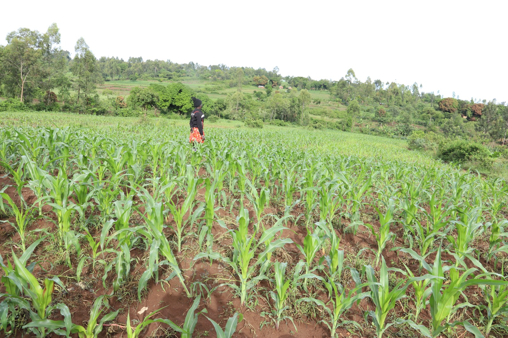

From a two-room house to a sanctuary of hope for over 820 children.
In 2007, Pastor Newton Atela and his wife Caroline witnessed the devastating impact of HIV/AIDS and poverty in their community. Moved by the plight of local orphans, they opened the doors of their modest two-room house to 32 children.
What began as a small act of faith has blossomed into a lifelong mission. Today, Gideons Organization stands as a testament to what love and perseverance can achieve, transforming Ramba-Kabondo into a center for excellence and care.
Year Founded
Current Students
Our guiding principles as we serve Western Kenya.
To provide high-quality education, healthcare, and a loving home to orphans and vulnerable children, empowering them to break the cycle of poverty through Christ-centered values.
To be a leading organization across the continent of Africa, recognized for excellence in nurturing future leaders and restoring hope to the marginalized.
We are committed to building a future where our home is sustained by our own hands.
At Gideons, we believe that true empowerment comes from independence. This is why we have invested heavily in Income Generating Activities (IGAs) that serve two purposes: providing food and funds for the home, and teaching our children valuable life skills.

Whether you are an international NGO or a local supporter, your partnership helps us write the next chapter of this story.
Partner With Us